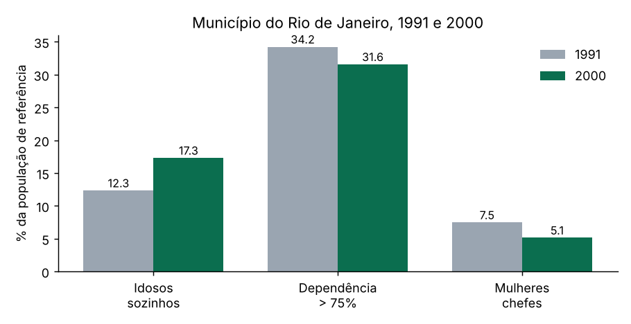
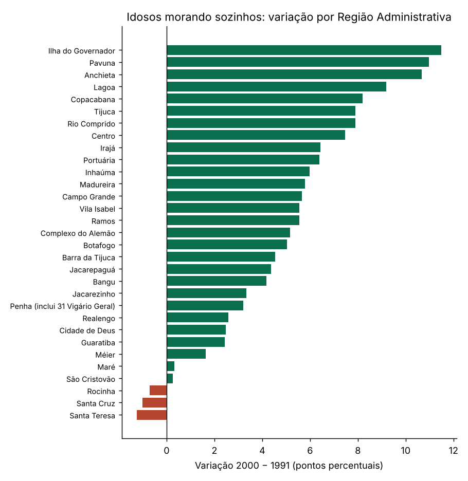
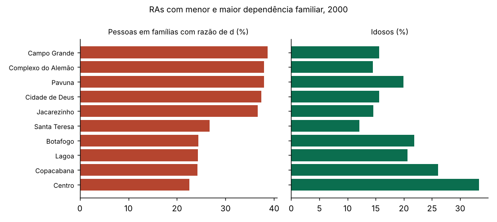
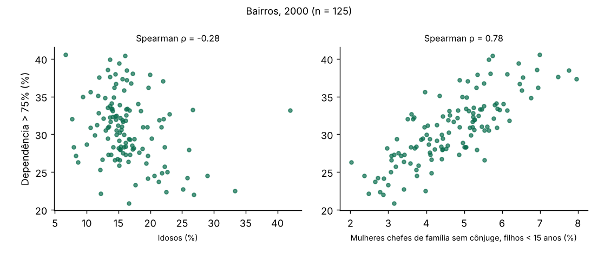

Vulnerabilidade da situação familiar no município do Rio de Janeiro: mudanças entre os Censos de 1991 e 2000
Python 3pandasFAIRCódigo: MITDados/Texto: CC-BY 4.0Repositório no GitHub →
Resumo
Este estudo analisa indicadores de vulnerabilidade da situação familiar no município do Rio de Janeiro a partir da Tabela 1179 do Armazém de Dados (IPP), com dados dos Censos de 1991 e 2000 por Região Administrativa (RA) e por bairro. Foi construído um pipeline determinístico em Python (pandas, SciPy e Matplotlib) para limpar as planilhas, harmonizar os níveis territoriais e calcular variações em pontos percentuais. Entre 1991 e 2000, o percentual de idosos morando sozinhos subiu de 12,3% para 17,3% no município, com aumento em 28 das 31 RAs, enquanto o de mulheres chefes de família sem cônjuge e com filhos pequenos caiu de 7,5% para 5,1%. Em 2000, a dependência familiar elevada variou 1,72 vez entre a RA menos e a mais afetada, e nos bairros associou-se fortemente à chefia feminina (ρ = 0,78). Discutem-se limitações de comparabilidade entre censos e do desenho ecológico, e o repositório segue os princípios FAIR.
Palavras-chave: vulnerabilidade familiar; envelhecimento; Rio de Janeiro; Censo demográfico; ciência aberta.
1. Introdução
A composição das famílias é um dos principais determinantes da capacidade de uma população de cuidar de seus membros mais dependentes. Idosos que vivem sozinhos, famílias com muitas crianças e idosos por adulto em idade ativa e mulheres que criam filhos pequenos sem cônjuge são situações frequentemente associadas a maior exposição a riscos sociais. Mapear como esses indicadores se distribuem e se transformaram no território carioca ajuda a orientar políticas locais de assistência e cuidado.
Este trabalho usa a Tabela 1179 do Armazém de Dados do Instituto Pereira Passos, que reúne três indicadores de vulnerabilidade da situação familiar para 1991 e 2000. Orientam a análise as seguintes perguntas de pesquisa:
- RQ1. Como evoluíram os três indicadores no município e nas RAs entre 1991 e 2000?
- RQ2. Quais RAs concentravam, em 2000, os maiores e os menores níveis de dependência familiar e de idosos morando sozinhos?
- RQ3. Como os indicadores se associam entre si nos bairros, e as unidades que partiam de níveis mais altos em 1991 variaram menos?
2. Metodologia e Pipeline de Dados
Fonte e granularidade. Os dados vêm da Tabela 1179 (Fundação João Pinheiro, convênio IPP/IUPERJ/IPEA, 2003), em arquivo .xls com cinco abas: definições, RAs em 1991 e 2000 e bairros em 1991 e 2000. Cada linha é uma unidade territorial e cada coluna é um percentual. Os três indicadores são: (i) pessoas de 65 anos ou mais morando sozinhas; (ii) pessoas em famílias com razão de dependência maior que 75%; (iii) mulheres chefes de família, sem cônjuge e com filhos menores de 15 anos.
Tratamento. As abas têm títulos e notas de rodapé misturados aos dados. O pipeline lê cada aba sem cabeçalho, converte as colunas para numérico (rodapés viram nulos e são descartados), padroniza nomes e códigos, empilha as quatro tabelas em um formato longo (nivel, ano, codigo, nome) e marca a linha agregada do município. Após o tratamento restaram 31 RAs e 125 bairros por ano, sem valores ausentes. Os bairros da fonte já vêm agrupados em alguns casos (por exemplo, "Botafogo, Urca"), e esses agrupamentos foram mantidos. O arquivo bruto nunca é alterado. A métrica derivada é a variação em pontos percentuais (2000 − 1991), calculada só para unidades presentes nos dois anos. O resultado é salvo em .csv.gz.
df["nome"] = df["nome"].astype(str).str.strip()
for c in COLS:
df[c] = pd.to_numeric(df[c], errors="coerce") # rodapés → NaN
df = df.dropna(subset=COLS, how="all") # remove notas e linhas vazias
w = d.pivot_table(index="nome", columns="ano", values=COLS)
delta = w[(c, 2000)] - w[(c, 1991)] # variação em p.p.A associação entre indicadores foi medida pelo coeficiente de correlação de postos de Spearman (SciPy), adequado a distribuições assimétricas e a relações monotônicas.
3. Resultados e Discussão
RQ1 — Evolução 1991–2000

O percentual de idosos morando sozinhos subiu de 12,3% para 17,3%. O percentual de pessoas em famílias com razão de dependência acima de 75% caiu de 34,2% para 31,6%, e o de mulheres chefes de família sem cônjuge e com filhos pequenos caiu de 7,5% para 5,1%. O aumento de idosos sozinhos ocorreu em 28 das 31 RAs, com o maior salto em Ilha do Governador (+11,5 p.p.) e a maior queda em Santa Teresa (-1,2 p.p.). A chefia feminina caiu em 30 RAs.

O padrão é compatível com o envelhecimento populacional e com a redução da fecundidade, que também ajudaria a explicar a queda da dependência por menos crianças por adulto. Isso é uma hipótese plausível, não demonstrada por estes dados. A queda da chefia feminina sem cônjuge vai contra a expectativa de muitos leitores e pode refletir mudanças de definição ou de captação entre os censos, o que os dados agregados não permitem verificar.
RQ2 — Onde se concentra a vulnerabilidade em 2000

A dependência elevada foi mais baixa em Centro (22,5%), Copacabana (24,2%), Lagoa (24,3%) e mais alta em Campo Grande (38,6%), Complexo do Alemão (38,0%), Pavuna (37,9%), uma razão de 1,72 vez entre extremos. O padrão oposto aparece nos idosos sozinhos, mais frequentes em Centro (33,3%), Portuária (26,6%), Copacabana (26,1%). Ou seja, as RAs mais centrais e de ocupação mais antiga concentram idosos sozinhos, e as periféricas concentram famílias com alta carga de dependentes. São duas faces diferentes da vulnerabilidade, o que sugere que um índice único as esconderia.
RQ3 — Associações entre indicadores nos bairros

Em 2000, a dependência familiar elevada associou-se fortemente à chefia feminina (ρ = 0.78) e de forma negativa e moderada aos idosos sozinhos (ρ = -0.28). Entre 1991 e 2000, os bairros que partiam de níveis mais altos de idosos sozinhos tiveram aumentos menores (ρ = -0.37), sinal de convergência parcial, embora parte disso possa ser regressão à média.
4. Conclusão
Entre 1991 e 2000, o Rio de Janeiro viu crescer o isolamento domiciliar dos idosos enquanto recuavam a dependência e a chefia feminina com filhos pequenos. A geografia da vulnerabilidade tem dois polos distintos: um central, ligado ao envelhecimento, e outro periférico, ligado à dependência e à chefia feminina. Limitações: os dados são agregados (risco de falácia ecológica); as fronteiras e os agrupamentos de bairros podem ter mudado entre os censos; os bairros foram analisados em 2000 e a comparação temporal usa só unidades presentes nos dois anos; e os dados são antigos. Trabalhos futuros: incorporar o Censo 2010 e o de 2022, mapas coropléticos com malhas territoriais e modelos que controlem renda e escolaridade.
5. Disponibilidade dos Dados e Declaração FAIR
- Findable: repositório com README, palavras-chave e link para a fonte original.
- Accessible: repositório público e artigo em GitHub Pages, sem credenciais.
- Interoperable: dicionário em
data/data_dictionary.mde dados processados em.csv.gz. - Reusable: licenças MIT (código) e CC-BY 4.0 (dados e texto) e dependências fixadas.
git clone https://github.com/BernardoArce/vulnerabilidade-familiar-rj.git
cd vulnerabilidade-familiar-rj
python -m venv .venv && source .venv/bin/activate
pip install -r requirements.txt
python src/etl.py && python src/analysis.py && python src/build_article.py6. Referências
- INSTITUTO PEREIRA PASSOS (IPP). Armazém de Dados: Tabela 1179 – Indicadores de Vulnerabilidade – Situação Familiar. Cálculos e tabulação: Fundação João Pinheiro (Convênio IPP, IUPERJ, IPEA), 2003. Rio de Janeiro: Prefeitura da Cidade do Rio de Janeiro.
- WILKINSON, M. D. et al. The FAIR Guiding Principles for scientific data management and stewardship. Scientific Data, v. 3, 160018, 2016.
- MCKINNEY, W. Data structures for statistical computing in Python. In: Proceedings of the 9th Python in Science Conference, 2010. p. 56–61.
- HUNTER, J. D. Matplotlib: a 2D graphics environment. Computing in Science & Engineering, v. 9, n. 3, p. 90–95, 2007.
- VIRTANEN, P. et al. SciPy 1.0: fundamental algorithms for scientific computing in Python. Nature Methods, v. 17, p. 261–272, 2020.